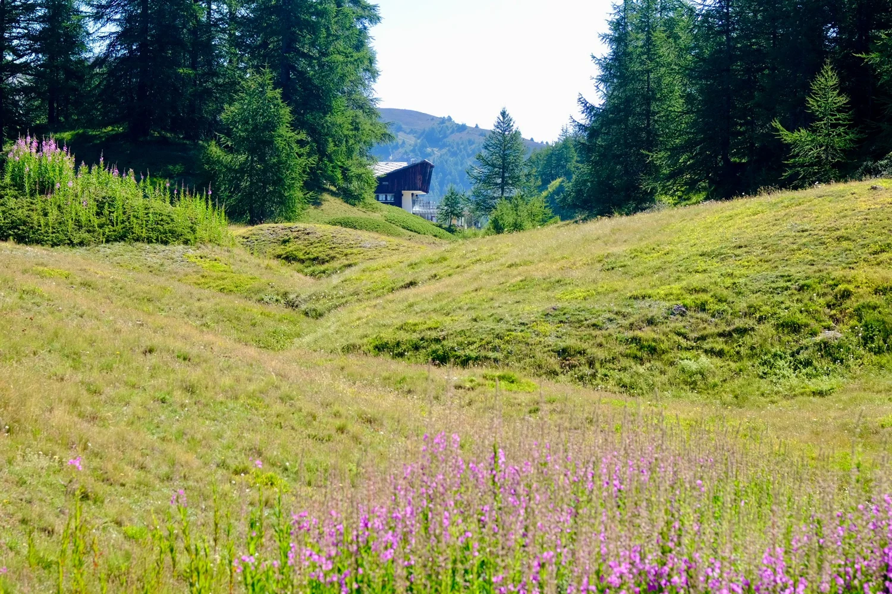
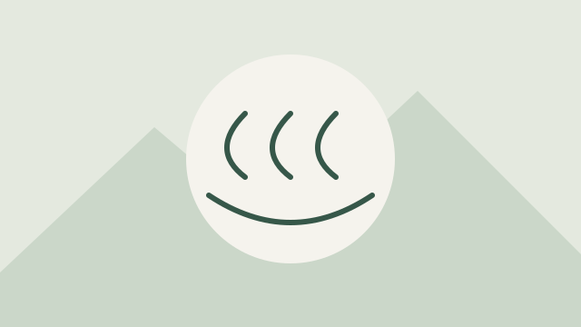
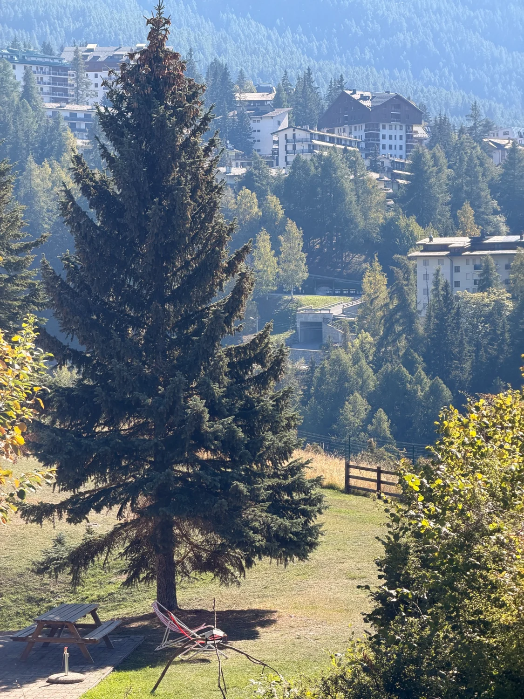
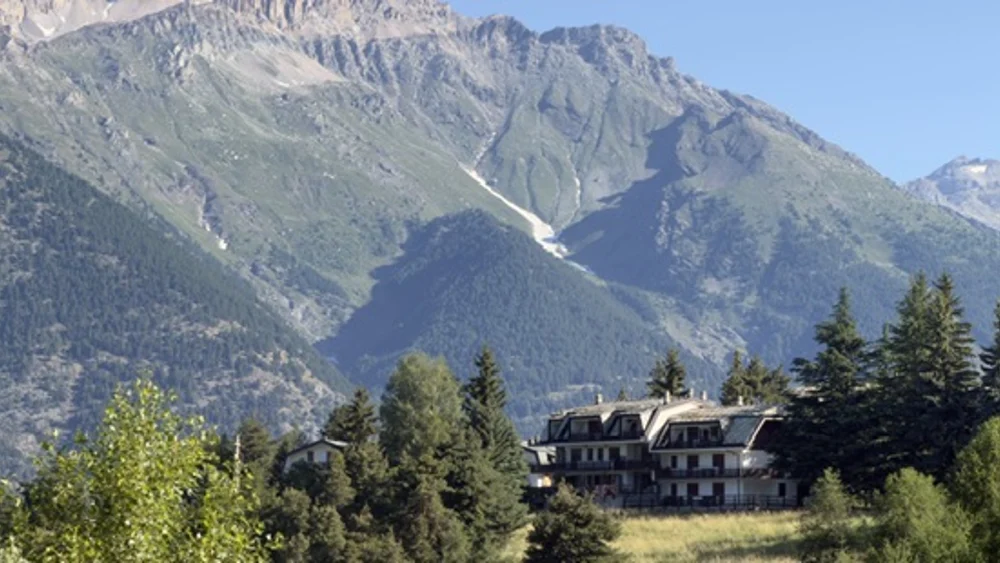
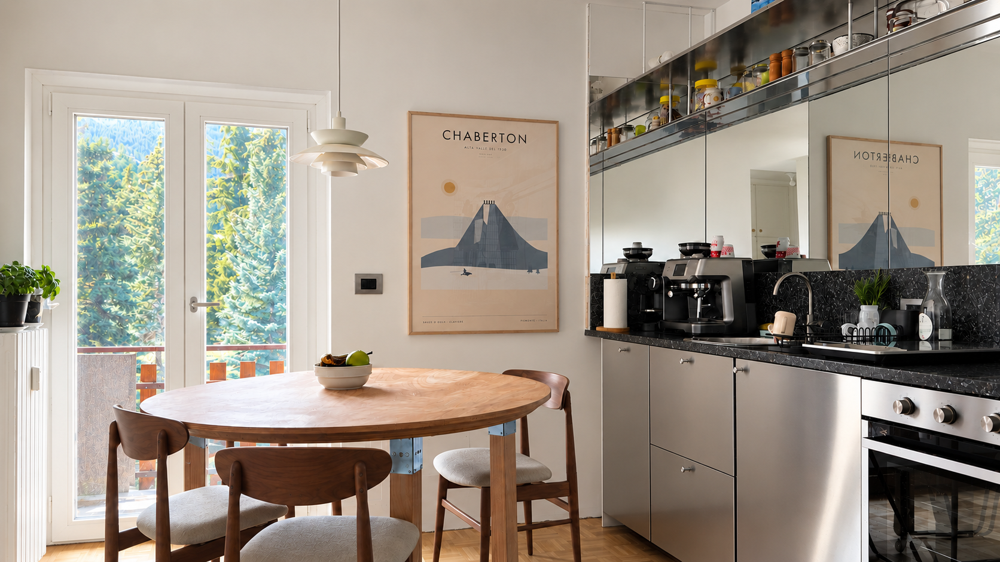

Winter
WinterEin perfekter Skitag
Skifahren ab Jouvenceaux oder Clotes (ca. 5–8 Autominuten), Mittagessen in Sportinia.
Informationen ↗Aufwachen. Entdecken. Heimkommen. Bei Regen oder Schnee genießen Sie Filme, Brettspiele, Tee, Sonos-Musik und warmes Licht. Bei Sonne wartet ein neues Abenteuer.
 Winter
WinterSkifahren ab Jouvenceaux oder Clotes (ca. 5–8 Autominuten), Mittagessen in Sportinia.
Informationen ↗ Winter
WinterWinterwanderungen, Rodeln auf erlaubten Flächen und geführte Schneeschuhtouren.
Informationen ↗
Sommer und SportBikepark, E-Bikes und Assietta-Straße. Verleih bei Faure Sport und 3Sixty.
Informationen ↗ Sommer und Sport
Sommer und SportPin Court in Sauze sowie Anlagen in Sestriere und Bardonecchia.
Informationen ↗ Familie
FamilieSommercamps, Tennis und Multisport: Pin Court, PlayOff und Snowmaxx. Tagesbetreuung und Alter erfragen.
Informationen ↗ Familie
FamilieAdventure Village, Spaziergänge, Paintball und Schneeaktivitäten; Altersgrenzen prüfen.
Informationen ↗EntspannungFilme auf LG OLED, Brettspiele, Kräutertee, Kaffee, Sonos und warmes Licht.
Informationen ↗
EntspannungSpa und Massagen in Sauze und Durancia in Montgenèvre; Zugang erfragen.
Informationen ↗ Gastronomie
GastronomieCapanna Mollino, Capanna Kind, Chalet Capannina, Ciao Pais und Clot Bourget.
Informationen ↗
NaturGran Bosco di Salbertrand: Lärchen, Wanderungen und rücksichtsvolle Tierbeobachtung.
Informationen ↗ Natur
NaturDen Himmel von einem sicheren Ort oder Balkon beobachten. Wolken und Mondphase prüfen.
Informationen ↗ Kultur
KulturMontgenèvre und Briançon: Vauban-Festungen, Spaziergänge und Gastronomie.
Informationen ↗
KulturSestriere, Cesana, Claviere, Pragelato, Bardonecchia, Oulx, Usseaux und Valle Argentera.
Informationen ↗
KulturCapanna Mollino, Festungen Exilles und Fenestrelle, alpine Architektur und olympisches Erbe.
Informationen ↗ Sommer und Sport
Sommer und SportAssietta, Colle delle Finestre und Mont Cenis per Rad oder Motorrad; Sperrungen prüfen.
Informationen ↗ Kultur
KulturSommerkonzerte in Sportinia, Musik in Hütten und Veranstaltungen im Dorf. Programm prüfen.
Informationen ↗ Gastronomie
GastronomieMärkte, Brot, Käse und regionale Produkte.
Informationen ↗WinterEin Getränk nach dem Skifahren, am Berg oder im Dorf. Öffnungszeiten und letzte Liftfahrt prüfen.
Informationen ↗Saisonale Ideen: offizielle Termine prüfen.
Cesana–Sestriere · Bardonecchia · Sestriere
Mit dem Zug nach Oulx, dann Busverbindungen nach Sauze prüfen. Mit dem Auto über die A32 oder offene Grenzstraßen. E-Auto-Laden am überdachten Stellplatz für Gäste inklusive.
Züge · Nahverkehr